[5-1] EXTI外部中断 — 学习笔记
- 课程：江协科技《STM32入门教程-2023版 细致讲解 中文字幕》
- 视频：BV1th411z7sn?p=11，41:57（约 2517 秒）
- 素材：252 帧关键帧（每 10 秒，宽 1280px）+ PP-OCRv4 画面硬字幕 OCR（643 段）；关键截图 16 张随笔记收录（源图在
vidsum_out/stm32_p11/frames/，站内图片在assets/images/stm32-11/） - 字幕情况：该集 B 站没有 CC/AI 字幕，文本由画面烧录的中文字幕 OCR 得到（source=subtitle-ocr），偶有错字已按画面校正（清单见文末「存疑」）。
- 本集定位：这是中断部分的纯理论课——片头只演示两个已经写好的程序的现象，全片没有写一行代码。视频结尾原话是「本小节中断系统和外部中断的理论部分我们就学到这里，下一小节我们再来学习一下外部中断的代码部分」。因此本笔记不包含 EXTI 初始化步骤、库函数用法和中断服务函数实现，那些内容在 [5-2]。
一句话结论
这一集先把「中断」的通用概念讲透（触发条件出现 → CPU 暂停主程序 → 执行中断程序 → 返回断点，靠优先级决定先后、靠抢占优先级决定能否嵌套），再讲 STM32 的实现：68 个可屏蔽中断通道全部由 NVIC 统一管理，每个通道 16 级优先级再用 0～4 共 5 种分组切成「抢占优先级 + 响应优先级」；然后落到外部中断 EXTI——EXTI 有 20 条中断线（16 个 GPIO_Pin + PVD/RTC/USB/ETH 四个「蹭网」外设），所有 GPIO 都能用但相同 Pin 编号不能同时触发中断，由 AFIO 当数据选择器从 PA0…PG0 里挑一个接到 EXTI0；EXTI 适合处理外部驱动、快速、突发的信号（旋转编码器、红外遥控接收头），最后讲清旋转编码器的 AB 相正交波形和配套硬件电路。
0. 本集定位：纯理论课，代码在下一集
- 本集对应 PPT 的
05-EXTI外部中断部分（画面里幻灯片编号从第 41 张开始，讲到旋转编码器硬件电路，之后切到参考手册），内容是：中断系统概念 → STM32 中断资源 → NVIC → EXTI → AFIO → 旋转编码器 → 手册导读。 - 全片没有新建工程、没有写代码、没有烧录；片头演示的两个程序是现成的（Keil 标题栏里的工程目录名分别是
5-1 对射式红外传感器计次和5-2 旋转编码器计次），它们正是下一小节 [5-2] 要写的两个程序。 - 所以本集看到的所有「代码」相关内容都只出现在 PPT 结构示意图和手册截图里，不能当成本集讲过的代码用法。
1. 片头现象：两个现成的外部中断程序
本集开头先看现象，两个程序都用到了外部中断：
程序 1：对射式红外传感器计次
- 面包板上接了一个红外对管传感器，OLED 上显示一个数字，初始是
Count: 00000。 - 用挡光片挡在红外对管中间：模块的输出指示灯灭，代表现在输出高电平。
- 再拿开挡光片：输出指示灯亮，代表输出低电平。在「灭到亮」之间会产生一个下降沿，这个下降沿触发单片机引脚的外部中断，中断程序执行「数字加 1」，屏幕变成
Count: 00001。 - 再挡光几次，屏幕上的数字就统计了挡光的次数。
程序 2：旋转编码器计次
- 面包板上接了一个旋转编码器，OLED 上显示一个数字（画面中是
Num:+00006）。 - 旋转编码器时数字跟着变化：向右转就加，向左转就减。
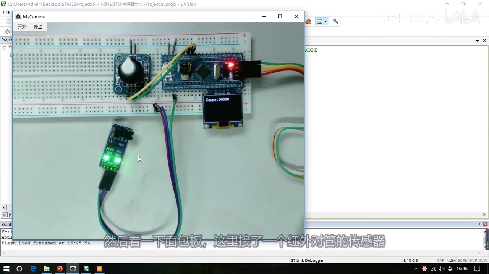
图 1：片头现象①对射式红外传感器计次——红外对管接在面包板上，OLED 显示 Count: 00000
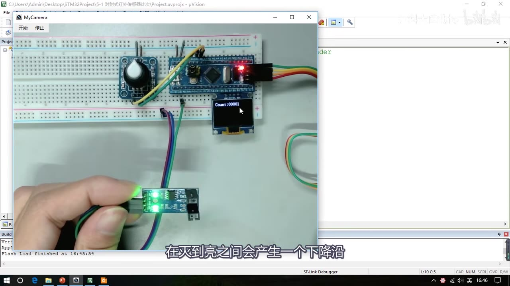
图 2：挡光片拿开的瞬间——输出指示灯亮（低电平），从灭到亮产生下降沿，计数变为 Count: 00001
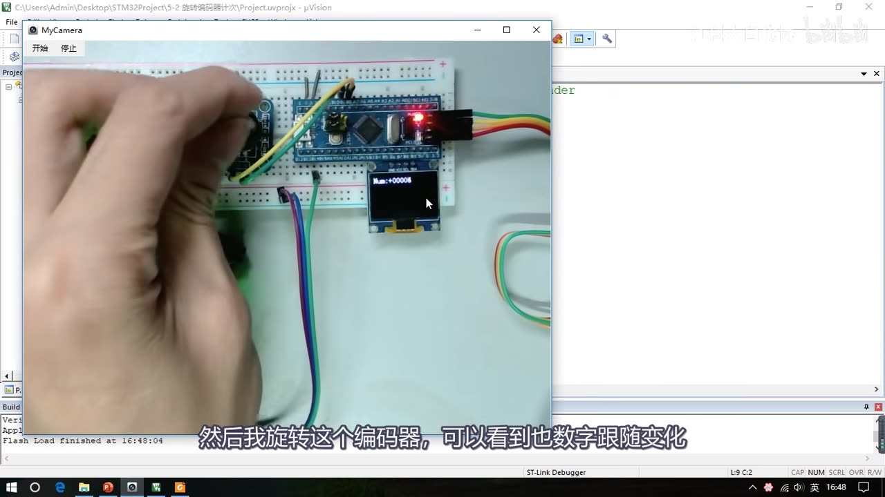
图 3：片头现象②旋转编码器计次——旋转编码器时 OLED 上的数字跟随变化（右转加、左转减）
2. 中断的概念
2.1 中断的定义与中断源
- 中断：在主程序运行过程中，出现了特定的中断触发条件（中断源），使得 CPU 暂停当前正在运行的程序，转而去处理中断程序，处理完成后再返回原来被暂停的位置继续运行。
- 中断源的例子：外部中断可以是引脚发生了电平跳变；定时器可以是定时的时间到了；串口通信可以是接收到了数据。
- 这些事件往往比较紧急：外部中断来了如果不处理，下一个跳变信号就跟着过来了；串口接收中断来了如果不读取数据，下一个数据过来就会把原来的数据覆盖掉。
- 所以希望中断条件满足时 CPU 能立即停下当前程序去处理（比如外部中断来了就计次、变量
++；串口中断来了就把接收到的数据转存起来），处理完再回到原来停下的地方继续运行——这就是中断的处理流程和用途。 - 使用中断系统能极大地提高程序效率：没有中断系统时，为了防止外部中断被忽略或串口数据被覆盖，主程序只能不断查询；没有定时器中断就只能靠
Delay函数实现定时。有了中断系统，主程序可以放心执行其它事情，有中断时再去处理。视频里打了个比方：定好闹钟就可以放心睡觉，闹钟响了相当于产生一个中断信号；没有闹钟就得不断看时间、不敢安心睡。
2.2 中断优先级
- 当有多个中断源同时申请中断时，CPU 会根据中断源的轻重缓急进行裁决，优先响应更加紧急的中断源。
- 也就是说，中断优先级就是中断的紧急程度，它是由我们根据程序设计的需求自己设置的：为了在多个中断同时申请时判断应该先处理哪个——非常紧急的就把优先级设高一些，不那么紧急的设低一些。
- 这样可以更好地安排中断事件，防止紧急的事件被别的中断耽误。
- STM32 中中断优先级还有多种分类（后面 NVIC 部分详细讲）。
2.3 中断嵌套
- 中断嵌套：当一个中断程序正在运行时，又有新的更高优先级的中断源申请中断，CPU 再次暂停当前中断程序，转而去处理新的中断程序，处理完成后依次进行返回。
- 这种把中断程序再次中断的现象就叫中断嵌套；它也是为了照顾非常紧急的中断——如果 CPU 已经在执行某个中断程序，这时又来了一个非常紧急的中断，这个中断就可以把当前中断程序二次中断、立即执行。
- 能否进行中断嵌套由中断优先级决定（后面讲抢占优先级时细说）。
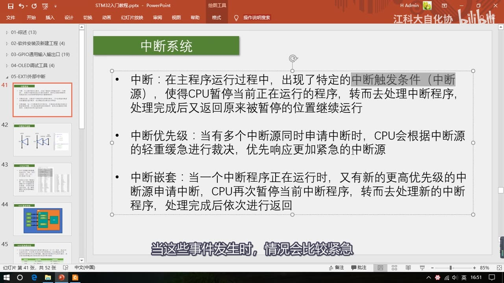
图 4：中断系统 PPT——中断的定义（中断源/暂停主程序/处理完返回）、中断优先级、中断嵌套三条概念
3. 中断的执行流程
- 中断程序的执行流程：主程序执行到某个地方时，外设的中断条件满足了，这时无论主程序在干什么（加减乘除还没算完、OLED 显示程序才执行一半、
Delay函数还在等待），主程序都得立即暂停，程序由硬件电路自动跳转到中断程序；中断程序执行完之后，再返回被暂停的地方继续运行（没算完的继续算、没显示完的继续显示、没延时完的继续延时）。 - 这个被暂停的地方称为断点。为了程序能在中断返回后继续原来的工作，中断执行前会对程序的现场进行保护，中断执行后再还原现场，保证主程序即使被中断了、回来之后也能继续运行。
- 用 C 语言编程时，保护现场和还原现场的工作不需要我们来做，编译器自动帮我们做好了，了解一下即可。
- 中断嵌套的执行流程：普通中断程序正在执行时，新的更高优先级中断到来，会再次打断它、执行新中断；新中断结束再继续原来的中断，原来的中断结束再继续主程序。
- C 语言程序的结构：主函数
main里的while (1)死循环就是主程序；中断程序一般写在一个子函数里，这个函数不需要我们调用——中断来临时由硬件自动调用。
PPT 右侧用下面这个骨架示意（本集不写实现，只是结构示意；具体代码在 [5-2]）：
int main(void)
{
while (1)
{
// 主程序
// ...
// 主程序
}
}
// 中断程序：不需要我们调用，中断来临时由硬件自动调用
void EXTI0_IRQHandler(void)
{
// 中断程序
// ...
// 中断程序
}
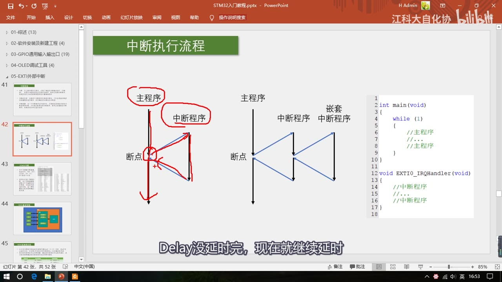
图 5：中断执行流程 PPT——主程序/中断程序/断点、中断嵌套流程，右侧 C 程序用 while(1) 和 EXTI0_IRQHandler 说明结构
4. STM32 的中断系统
- 68 个可屏蔽中断通道（中断通道就是中断源的意思）：这是 F1 系列最多的中断数量；对于具体的型号，可能没有这么多中断，以对应型号的数据手册为准。
- 这些中断通道包含 EXTI 外部中断、TIM 定时器、ADC 模数转换器、USART 串口、SPI 通信、I2C 通信、RTC 实时时钟等多个外设——可以看出 STM32 的中断非常多，几乎所有的模块都能申请中断。
- 使用 NVIC 统一管理中断：每个中断通道都拥有 16 个可编程的优先等级，还可以对优先级进行分组，进一步设置抢占优先级和响应优先级。
- 右侧的中断资源表：上面灰色的部分是内核的中断（复位、NMI、HardFault、MemManage 等），一般比较「高深」、用不到；下面不是灰色的部分是 STM32 外设的中断——比如窗口看门狗（程序卡死、没有及时喂狗就申请中断，可以在中断程序里做错误检查）、PVD 电源电压监测（供电电压不足时申请中断），等等。本节要学的外部中断对应表里的 EXTI0～EXTI4、EXTI9_5、EXTI15_10。
- 表里还有一列中断地址：因为硬件跳转受限制，中断发生后只能跳到固定地址执行程序；为了能跳转到不固定的中断函数，就需要在内存中定义一个地址列表——列表地址固定，中断发生后先跳到这个固定位置，再由编译器在这个固定位置加上一条跳转到中断函数的代码，这样中断跳转就能跳到任意位置了。这个地址列表就叫中断向量表，相当于中断跳转的「跳板」。
- 用 C 语言编程不需要管中断向量表，编译器都帮我们做好了。
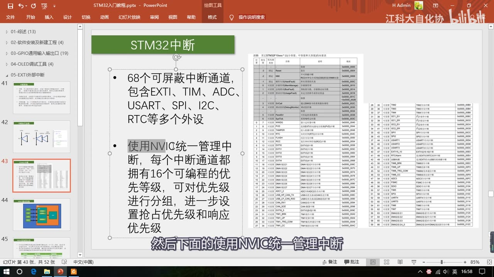
图 6：STM32 中断 PPT——68 个可屏蔽中断通道、NVIC 统一管理、每个通道 16 个优先级；右侧为中断向量表
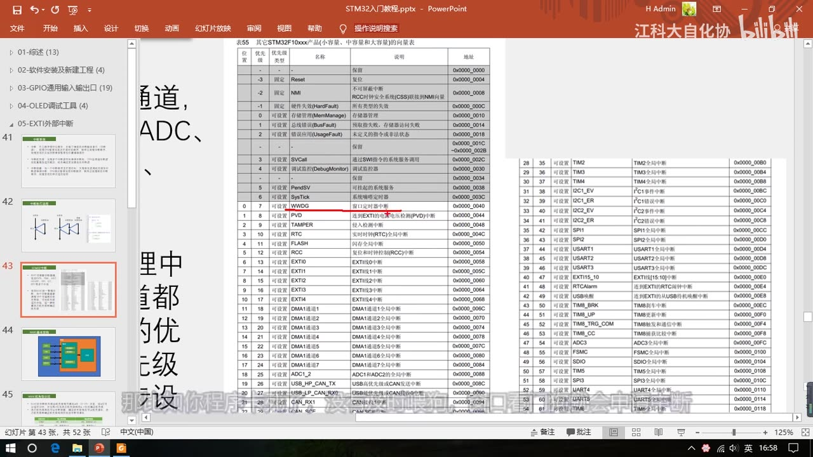
图 7：中断向量表（表 55 其它 STM32F10xxx 产品的向量表）——窗口看门狗、PVD、RTC、EXTI0～4 等中断通道及其地址
5. NVIC 的基本结构
- NVIC = 嵌套向量中断控制器（Nested Vectored Interrupt Controller）。在 STM32 中，它用来统一分配中断优先级和管理中断。
- NVIC 是一个内核外设，是 CPU 的「小助手」。
- 为什么要它：STM32 的中断非常多，如果把这些中断全都接到 CPU 上，CPU 还得引出很多线进行适配，设计上很麻烦；并且很多中断同时申请、或者中断很多产生拥堵时，CPU 也很难处理——毕竟 CPU 主要是用来运算的，于是把中断分配的任务放到别的地方，NVIC 就出现了。
- 结构图：左边是各个外设（EXTI、TIM、ADC、USART……），每个外设都有中断线接到 NVIC；线上的斜杠加 n 表示一个外设可能会同时占用多个中断通道，所以这里有 n 条线。NVIC 只有一个输出口，它根据每个中断的优先级分配中断的先后顺序，然后通过这一个输出口告诉 CPU「你该处理哪个中断」。对于中断先后顺序分配的任务，CPU 不需要知道。
- 医院叫号的类比：CPU 好比医生，如果医院只有医生，病人很多时医生得自己安排先看谁、后看谁，遇到紧急病人还要让他最先来，这个安排先后次序的任务很繁琐、影响看病效率；所以医院安排了一个叫号系统——病人来了统一取号、根据病人等级分配优先级，叫号系统优先叫紧急的病人，最终给医生输出一个个排好队的病人，医生专心看病。这个叫号系统在 STM32 里就是 NVIC。
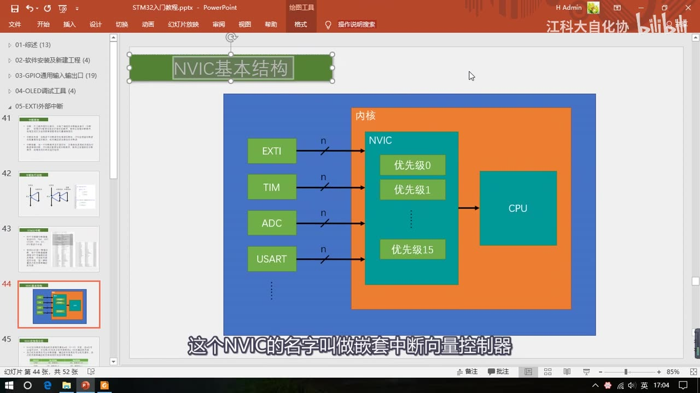
图 8：NVIC 基本结构——多路外设中断（EXTI/TIM/ADC/USART…）接入，NVIC 分配优先级 0～15 后单路输出给 CPU
6. NVIC 的优先级分组
6.1 抢占优先级与响应优先级
为了处理不同形式的优先级，STM32 的 NVIC 可以对优先级进行分组，分为抢占优先级和响应优先级。用病人叫号的例子来区分：
- 响应优先级 = 「插队」的优先级：上一个病人正在看病、外面排队了很多病人，上一个看完后，紧急的病人即使是后来的，也会最先进去看病。响应优先级高的可以插队提前看病。
- 抢占优先级 = 「能否中断嵌套」的优先级：如果病人更加紧急，并且此时已经有人在看病，他可以不等上一个人看完，直接冲到医生屋里，让上一个病人先靠边站、先给他看，等他看完了上一个病人再继续。这种决定是不是可以中断嵌套的优先级，就是抢占优先级。
6.2 优先级规则
- NVIC 的中断优先级由优先级寄存器的 4 位决定：4 位二进制可以表示 0～15，对应 16 个优先级；数值越小，优先级越高（0 是最高优先级）。
- 这 4 位可以进行切分：高 n 位的抢占优先级 + 低 4-n 位的响应优先级。
- 三条排队规则：抢占优先级高的可以中断嵌套；响应优先级高的可以优先排队；抢占优先级和响应优先级均相同的按中断号排队——中断号就是中断资源表里那个数字（比如 DMA1 通道 5 那一行的数字），数值小的优先响应。
- 所以 STM32 的中断不存在先来后到的排队方式，在任何时候都是优先级高的先响应。
6.3 优先级分组表（0～4 共 5 种分组）
| 分组方式 | 抢占优先级 | 响应优先级 |
|---|---|---|
| 分组 0 | 0 位，取值为 0 | 4 位，取值为 0～15 |
| 分组 1 | 1 位，取值为 0～1 | 3 位，取值为 0～7 |
| 分组 2 | 2 位，取值为 0～3 | 2 位，取值为 0～3 |
| 分组 3 | 3 位，取值为 0～7 | 1 位，取值为 0～1 |
| 分组 4 | 4 位，取值为 0～15 | 0 位，取值为 0 |
- 分组方式在程序中是我们自己来选择的；选好分组方式之后，在配置优先级的时候要注意抢占优先级和响应优先级的取值范围，不要超出表里规定的范围。
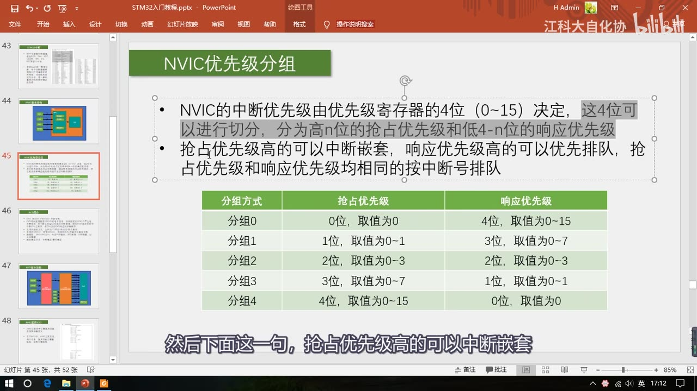
图 9：NVIC 优先级分组 PPT——4 位优先级切分为抢占/响应，以及分组 0～4 的取值表
7. EXTI 简介
- EXTI = Extern Interrupt，外部中断。
- EXTI 可以监测指定 GPIO 口的电平信号：当其指定的 GPIO 口产生电平变化时，EXTI 立即向 NVIC 发出中断申请，经过 NVIC 裁决后即可中断 CPU 主程序，使 CPU 执行 EXTI 对应的中断程序。简单来说就是：引脚电平变化，申请中断。
- 支持的触发方式（4 种）：
| 触发方式 | 含义 |
|---|---|
| 上升沿 | 电平从低电平变到高电平的瞬间触发中断 |
| 下降沿 | 电平从高电平变到低电平的瞬间触发中断 |
| 双边沿 | 上升沿和下降沿都可以触发中断 |
| 软件触发 | 引脚啥事没有，程序里执行一句代码就能触发中断 |
- 支持的 GPIO：所有 GPIO 口都可以当作外部中断的引脚，但相同的 Pin 不能同时触发中断——比如 PA0 和 PB0 不能同时用；PA1、PB1、PC1 这种 GPIO_Pin 编号一样的端口，只能选 1 个作为中断引脚。所以如果有多个中断引脚，要选择不同 Pin 编号的引脚，比如 PA6 和 PA7、PA9 和 PB15、PB0 和 PB1 这样的都可以。
- 通道数：20 个中断线路 = 16 个 GPIO_Pin（对应 GPIO_Pin_0 ～ GPIO_Pin_15）+ 外加 PVD 输出、RTC 闹钟、USB 唤醒、以太网唤醒 4 个。
- 这 4 个外设其实是来「蹭网」的：外部中断有个功能是从低功耗的停止模式唤醒 STM32——PVD 电源电压监测在电压过低恢复时需要借助外部中断退出停止模式；RTC 为了省电定个闹钟后让 STM32 进入停止模式、闹钟响时再唤醒，也要借助外部中断；USB 唤醒、以太网唤醒也是类似作用。本节主要学引脚的外部中断，这 4 个知道一下就行。
- 触发响应方式有两种：
- 中断响应：就是申请中断，让 CPU 执行中断函数（正常流程）。
- 事件响应：这是 STM32 对外部中断增加的一种额外功能——选择触发事件时，外部中断的信号不会通向 CPU，而是通向其它外设，用来触发其它外设的操作（比如触发 ADC 转换、触发 DMA 等），属于外设之间的联合工作。事件响应不会触发中断。
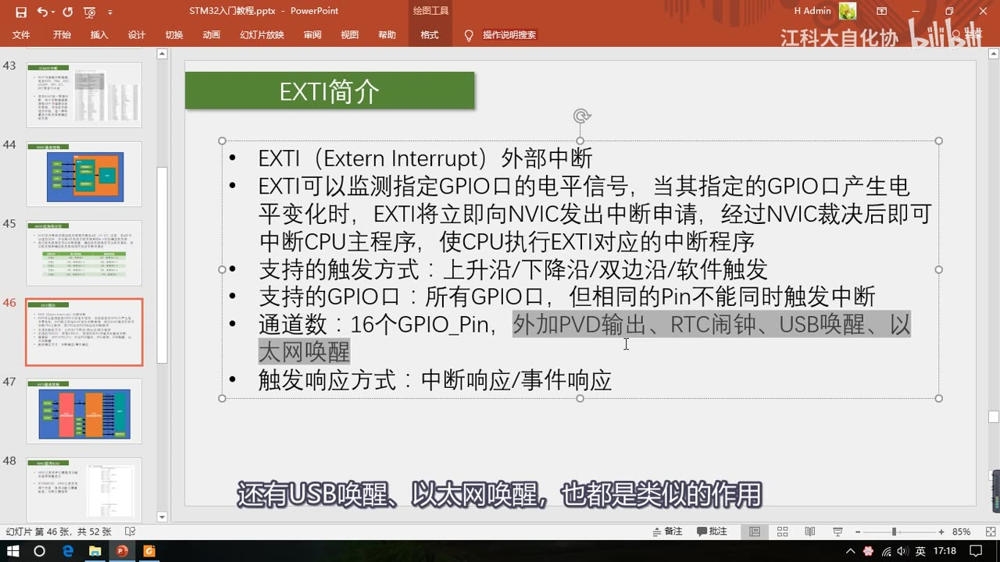
图 10：EXTI 简介 PPT——外部中断的功能、上升沿/下降沿/双边沿/软件触发、所有 GPIO 可用但相同 Pin 不能同时触发、20 条中断线、中断/事件响应
8. EXTI 的基本结构（整体框图）
- 最左边是 GPIO 外设（GPIOA、GPIOB、GPIOC……），每个 GPIO 外设有 16 个引脚，所以进来 16 根线。
- 但 EXTI 模块只有 16 个 GPIO 通道，而每个 GPIO 外设都有 16 个引脚——如果每个引脚占用一个通道，显然不够用。所以中间有一个 AFIO「中断引脚选择」电路模块，它就是一个数据选择器，可以从前面每个 GPIO 的 16 个引脚里选择其中一个，连接到后面 EXTI 的通道里。
- 这就是「所有 GPIO 都能触发中断，但相同的 Pin 不能同时触发中断」的原因：PA0、PB0、PC0 这些经过 AFIO 选择之后，只有其中一个能接到 EXTI 的通道 0 上；同理 PA1、PB1、PC1 也只能有一个连接到通道 1 上。
- 通过 AFIO 选择之后的 16 个通道接到 EXTI 边沿检测及控制电路；同时下面这 4 个「蹭网」外设（PVD、RTC、USB、ETH）也并列接进来——这些加起来就组成了 EXTI 的 20 个输入信号。
- 经过 EXTI 电路之后分成两种输出：
- 上面一路接到 NVIC，用来触发中断。注意：本来 20 路输入应该有 20 路中断输出，但 ST 公司可能觉得 20 个输出太多了、比较占用 NVIC 的通道资源，就把外部中断的 5～9 分到一个通道、10～15 分到一个通道——也就是说外部中断 5～9 会触发同一个中断函数，10～15 也会触发同一个中断函数；在编程时，要在这两个中断函数里再根据标志位来区分到底是哪个中断进来的。这一点要特别注意。
- 下面 20 条输出线路到其它外设，用来触发其它外设操作，也就是刚才说的事件响应。
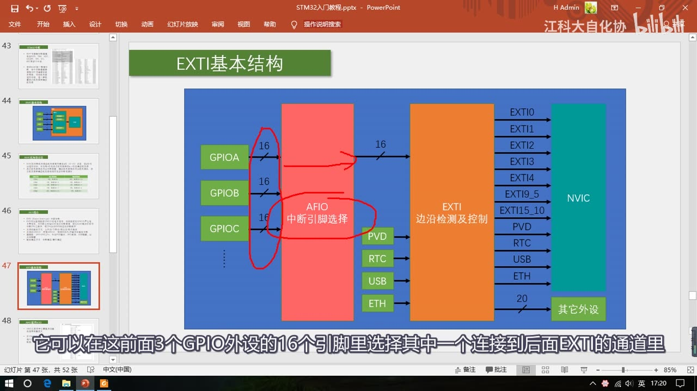
图 11：EXTI 基本结构——16 路 GPIO 经 AFIO（红圈：中断引脚选择）进入 EXTI 边沿检测及控制电路，中断输出到 NVIC、事件输出到其它外设
9. AFIO 复用 IO 口与中断引脚选择
- AFIO 主要用于引脚复用功能的选择和重定义，也就是数据选择器的作用。
- 在 STM32 中，AFIO 主要完成两个任务：
- 复用功能引脚重映射：就是最开始提到的「引脚定义表」里的复用功能重映射（比如把某些功能重映射到别的引脚上），用 AFIO 来完成，这是 AFIO 的一大主要功能。
- 中断引脚选择：就是上面说的、把 PA0…PG0 里的一个选出来接到 EXTI0 上，这个也是用 AFIO 完成的。
- 结构图（「图 20 外部中断通用 I/O 映像」）：一系列数据选择器。第一组的输入是 PA0、PB0、PC0……PG0（尾号都是 0），通过数据选择器最终选择一个连接到 EXTI0；图上标注了通过配置 AFIO_EXTICR 寄存器的相应位就可以决定选择哪一路输入。下面的 EXTI1……一直到 EXTI15 同样都是数据选择器，道理一样。
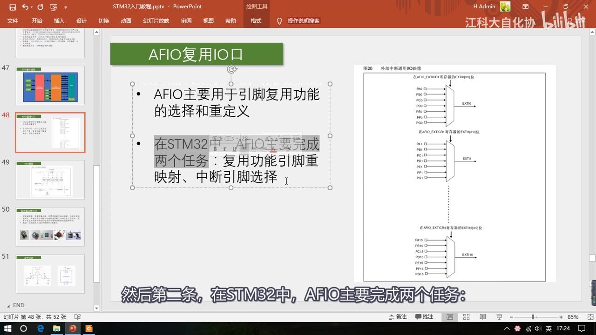
图 12：AFIO 复用 IO 口——AFIO 的两个任务，以及 EXTI0/EXTI1/EXTI15 的中断引脚选择（AFIO_EXTICR 数据选择器）
10. EXTI 的内部框图（图 19 外部中断/事件控制器框图）
- 右边是 20 根输入线；输入线首先进入边沿检测电路。上面的上升沿触发选择寄存器和下降沿触发选择寄存器可以选择是上升沿触发、下降沿触发，还是两个都触发。
- 触发信号进入或门：硬件触发和软件中断事件寄存器的值都接到这个或门的输入端，任意一个为 1，或门就可以输出 1——所以支持的触发方式就是上升沿、下降沿、双边沿和软件触发。
- 逻辑符号科普（在 STM32 的模块框图里非常常见）：
- 或门（弯弯的符号）：可以有多个输入、只能有一个输出，执行「或」的逻辑——输入端只要有一个是高电平 1，输出就是高电平 1；只有全部输入低电平 0，输出才为 0。
- 与门（带点直边的符号）：同样可以有多个输入、只能有一个输出，执行「与」的逻辑——输入端只要有一个是低电平 0，输出就是 0；只有全部输入 1，输出才为 1。
- 非门（三角号加个圈）：只有一个输入、一个输出，输入 1 输出 0，输入 0 输出 1。
- 数据选择器（梯形）：有多个输入、一个输出，侧面有选择控制端，根据控制端的数据从输入端选择一个接到输出。
- 触发信号通过或门之后兵分两路：
- 上一路：触发中断。先置一个挂起寄存器，这相当于一个中断标志位，我们可以读取这个寄存器判断是哪个通道触发的中断；挂起寄存器置 1 后继续向左走，和中断屏蔽寄存器共同进入一个与门，然后到 NVIC 中断控制器。这个与门实际上就是开关的作用：中断屏蔽寄存器给 1，另一个输入就直接输出（允许中断）；给 0，另一个输入无论是什么输出都是 0（屏蔽这个中断）。
- 下一路：触发事件。先经过事件屏蔽寄存器进行开关控制，最后通过一个脉冲发生器到其它外设——脉冲发生器就是给一个电平脉冲，用来触发其它外设的动作。
- 框图其余部分：画一条斜线写着 20，表示这是 20 根线、代表 20 个通道；上面是外设接口和 APB 总线，我们可以通过总线访问这些寄存器。
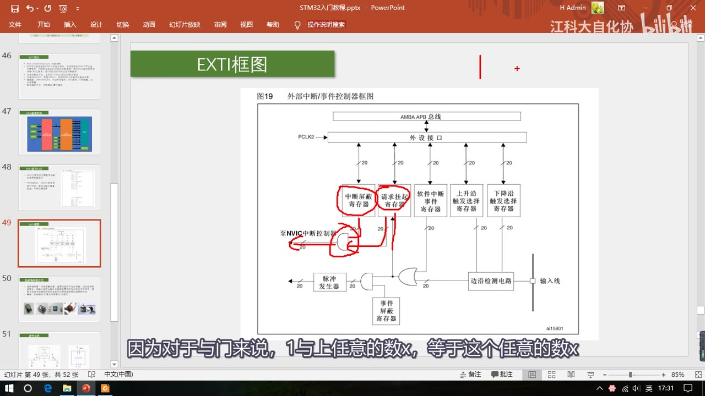
图 13：EXTI 框图（图 19 外部中断/事件控制器框图）——边沿检测、软件中断/挂起寄存器、中断屏蔽与事件屏蔽、脉冲发生器
11. 外部中断的适用场景
- 对 STM32 来说，适合用外部中断去获取的信号是：外部驱动的、很快的、突发的信号。
- 外部驱动：信号由外部设备驱动，STM32 只能被动读取；
- 突发：STM32 不知道它什么时候会来；
- 非常快：STM32 稍微晚一点读取，就会错过很多波形。
- 例子：
- 旋转编码器的输出信号：可能很久都不会拧它，这时 STM32 不需要做任何事；但一拧就会有很多脉冲波形需要接收——突发、外部驱动、非常快。这种情况就适合用外部中断：有脉冲过来立即进入中断函数处理，没有脉冲时 STM32 专心做其它事情。
- 红外遥控接收头的输出：接收到遥控数据之后会输出一段波形，这个波形转瞬即逝、并且不会等你，所以需要外部中断来读取。
- 按键：虽然它的动作也是外部驱动的突发事件，但并不推荐用外部中断来读取按键——因为用外部中断不好处理按键抖动和松手检测的问题；按键的输出波形也不是转瞬即逝的，所以要求不高的话可以在主程序中循环读取；如果不想用主循环读取，可以考虑定时器中断读取的方式，这样既可以后台读取按键值、不阻塞主程序，也可以很好地处理按键抖动和松手检测的问题。
12. 旋转编码器
本节程序还用到了对射式红外传感器（之前讲过、用法简单，本集不再讲），重点介绍旋转编码器。
12.1 定义与类型
- 旋转编码器是用来测量位置、速度或旋转方向的装置；当其旋转轴旋转时，输出端可以输出与旋转速度和方向对应的方波信号；读取方波信号的频率和相位信息即可得知旋转轴的速度和方向。
- 类型：机械触点式、霍尔传感器式、光栅式等。
12.2 单相输出：只能测位置和速度
- 最简单的编码器样式用对射式红外传感器来测速，还要配合一个光栅编码盘。编码盘转动时，红外传感器的红外光就会出现遮挡、透过、遮挡、透过的现象，对应模块输出的电平就是高低电平交替的方波。
- 方波的个数表示转过的角度，方波的频率表示转速；我们可以用外部中断来捕获这个方波的边沿，以此判断位置和速度。
- 但这个模块只有一路输出，正转、反转输出的波形没法区分——所以这种测速方法只能测位置和速度，不能测量旋转方向。
12.3 两相正交输出：正反转可区分
- 套件里的旋转编码器是机械触点式：内部用金属触点进行通断，左右是两部分开关触点；内侧的两根细触点都和中间引脚连接，外侧的触点左边接一个引脚、右边接一个引脚；中间圆的金属片是一个按键——旋转编码器的轴可以按下去，按下时上面两根线短路、松手断开，就是个普通按键。
- 编码盘也是一系列像光栅一样的东西（这里是金属触点），旋转时依次接通和断开两边的触点。关键是金属盘的位置经过了设计，能让两侧触点的通断产生一个 90° 的相位差。
- 配合外部电路，这个编码器的两个输出就会输出这样的波形：正转时，左边的引脚（A 相）输出一个方波，右侧的引脚（B 相）输出一个和它相位相差 90° 的波形，B 相滞后 90°；反向旋转时 A 相还是方波信号，但 B 相提前 90°。这样正转和反转就可以区分开了。
- 这种相位相差 90° 的波形就叫正交波形；带正交波形信号输出的编码器可以用来测方向——这就是单相输出和两相正交输出的区别。
- 也有编码器不输出正交波形，而是一个引脚输出方波信号代表转速、另一个输出高低电平代表旋转方向，这种不是正交输出但也能测方向，了解一下即可。
- 其他形式：霍尔传感器式（直接附在电机后面，中间是一个圆形磁铁、边上两个位置错开的霍尔传感器，磁铁旋转时通过霍尔传感器输出正交方波）、独立的编码器元件（输入轴转动时输出波形，用法看相应手册）。
- 适用场合：套件里这种机械触点式编码器一般用来调节（比如音响调节音量），因为是触点接触的形式，不适合电机这种高速旋转的地方；另外几种是非接触形式，可以用于电机测速（在电机驱动应用中很常见）。本小节先用外部中断学习读取编码器计次数据的用法，以后学了定时器，还会再讲编码器测速的用途。
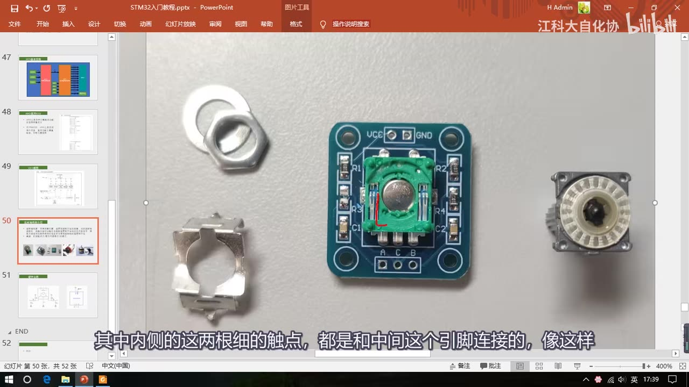
图 14：旋转编码器模块拆解——中间为编码器模块（内部触点已露出，红框标出内侧两根与中间引脚相连的触点），左侧为拆下的金属外壳/垫圈，右侧边缘为拆下的触点编码盘
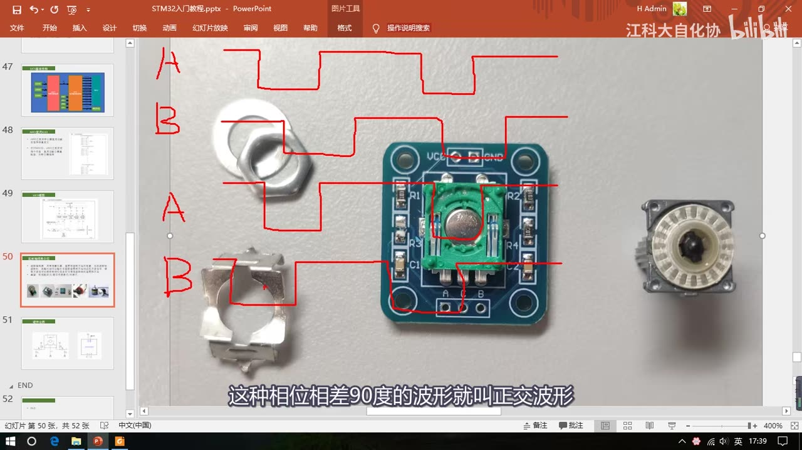
图 15：旋转编码器 AB 相正交波形——四段波形分别为 A、B、A、B，正转 B 相滞后 90°、反转 B 相超前 90°
13. 旋转编码器的硬件电路
- 左边是模块的电路图，中间就是旋转编码器；上面按键的两根线这个模块并没有使用、是悬空的，下面的两个触点在旋转时以相位相差 90° 的方式交替导通。
- 因为这只是个开关信号，所以要配合外围电路才能输出高低电平：
- 左边接了 10k 的上拉电阻（R1）：默认没旋转时，这个点被上拉为高电平，通过串接的 R3 输出到 A 端口也是高电平；
- 旋转时内部触点导通，这个点就被直接拉低到 GND，再通过 R3 输出，A 端口就是低电平；
- R3 是输出限流电阻，用来防止模块引脚电流过大；C1 是输出滤波电容，可以防止一些输出信号抖动；
- 右边的电路和左边一模一样，输出接 B 端口；最右边的 C 端口直接接到了 GND。
- 使用这个模块时接线很简单：上面 VCC、GND 接电源；下面的 A 相输出、B 相输出接 STM32 的两个引脚（比如 PB0 和 PB1，注意引脚的 GPIO_Pin 编号不要一样）；中间的 C 引脚是 GND，暂时不用。
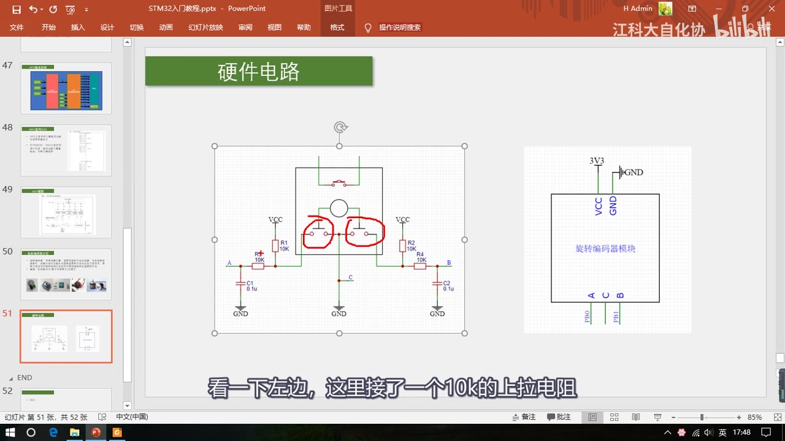
图 16：旋转编码器硬件电路——10k 上拉电阻、R3 限流、C1 滤波，A/B 两相输出，C 接 GND（右侧为接线示意 A/B→PB0/PB1）
14. 参考手册导读
- NVIC 是内核外设，所以要在这个 Cortex-M3 编程手册（
STM32F10xxx/20xxx/21xxx/L1xxxx Cortex-M3 programming manual，资料里的 PM0056）里找，目录里找到内核外设—NVIC 这一节就行。（作者说他目前还没找到这个手册的中文版。） - NVIC 的寄存器包括：中断使能寄存器、中断清除使能寄存器、中断设置挂起寄存器、中断清除挂起寄存器、中断活动位寄存器、中断优先级寄存器。其中中断优先级寄存器就是用来设置每个中断的优先级的；如果直接配置寄存器来设置优先级，还是比较复杂的，不过用库函数的话直接给结构体赋值就行了——但要知道库函数最终还是要落实到这个寄存器上的。
- 这些 NVIC 寄存器里还少了一个东西：中断分组的配置。中断分组的配置寄存器被分配到了 SCB 里面，在 SCB->AIRCR 里，这三位就是用来配置中断分组的；手册里也有中断分组的描述，和 PPT 里一样。
- 再打开 STM32F10xx 参考手册（中文版），在目录里找到**「中断和事件」**这一节：
- 9.1 嵌套向量中断控制器（NVIC）：特性（68 个可屏蔽中断通道、16 个可编程优先等级、低延迟的异常和中断处理、电源管理控制、系统控制寄存器实现等）、9.1.1 系统嘀嗒（SysTick）校准值寄存器、9.1.2 中断和异常向量（中断向量表）；
- 9.2 外部中断/事件控制器（EXTI）：框图（和 PPT 里一样）、外部中断唤醒事件的说明、功能说明，以及中断的线路映像（中断引脚选择）——这一部分实际上是在 AFIO 里的；
- 9.3 EXTI 寄存器描述：中断屏蔽寄存器、事件屏蔽寄存器、上升沿触发选择寄存器、下降沿触发选择寄存器、软件中断事件寄存器等，这些在中断框图里也都有体现；
- 最后是 AFIO 外设：手册里对 AFIO 的描述就一句话（复用功能引脚重映射的意思），下面全部都是重映射的表，通过配置寄存器就可以在这些映射关系里切换；最后几个寄存器，就是用来选择外部中断引脚的（也就是图 20 里的 AFIO_EXTICR）。用库函数更简单——调用一个函数、填两个参数就行了。
- 结尾预告：「本小节中断系统和外部中断的理论部分我们就学到这里，下一小节我们再来学习一下外部中断的代码部分」。所以 EXTI 的初始化、中断服务函数、清除中断标志等代码内容都在 [5-2]。
15. 本集小结与 [5-2] 的衔接
- 中断的本质：特定的中断触发条件（中断源）出现 → CPU 暂停主程序 → 执行中断程序 → 返回断点继续；中断能提高程序效率、避免漏掉紧急事件。
- 优先级决定谁先被响应；抢占优先级决定能否中断嵌套，响应优先级决定排队先后；STM32 用 4 位优先级 + 0～4 共 5 种分组来切分。
- STM32 有 68 个可屏蔽中断通道，全部由 NVIC 统一管理；中断向量表由编译器处理，用 C 语言不用管。
- EXTI 监测引脚电平变化来申请中断；20 条中断线 = 16 个 GPIO_Pin + PVD/RTC/USB/ETH；所有 GPIO 都能用，但相同 Pin 编号不能同时触发中断。
- AFIO 负责中断引脚选择（同时负责复用功能重映射）；EXTI 内部是「边沿检测 → 或门 → 挂起/中断屏蔽 → NVIC」与「事件屏蔽 → 脉冲发生器 → 其它外设」两路。
- 外部中断适合外部驱动、快速、突发的信号；不推荐用外部中断读按键（抖动/松手检测），可用主循环轮询或定时器中断。
- 旋转编码器用 AB 两相正交波形测方向，硬件上是上拉 + 限流 + 滤波。
下一小节 [5-2] 会用两个程序（对射式红外传感器计次、旋转编码器计次）把本集的理论写成代码，正好对应片头演示的两个现象。
16. 坑与易错点
- 相同 Pin 编号不能同时触发中断：PA0 和 PB0 不能同时用；PA1/PB1/PC1 只能选一个；要多个中断引脚就选不同 Pin 编号（如 PA6+PA7、PA9+PB15、PB0+PB1）。
- 20 条中断线 = 16 个 GPIO_Pin + 4 个「蹭网」外设（PVD/RTC/USB/ETH），不要以为 20 条都是 GPIO。
- EXTI5～9 共用一个中断函数、EXTI10～15 共用一个中断函数：编程时要再根据标志位区分是哪个通道进来的（这是 [5-2] 写代码时的坑，先记住）。
- 抢占优先级 vs 响应优先级 别记反：抢占优先级高的能中断嵌套；响应优先级高的能优先排队；两者都相同的才按中断号排队。
- 优先级数值越小越高：0 是最高优先级。
- 分组后取值范围别超：比如分组 1 时抢占只能 0～1、响应只能 0～7，超出表里规定的取值范围就是错的。
- STM32 中断不是「先来后到」：任何时候都是优先级高的先响应。
- 事件响应不触发中断：事件只是触发别的外设（ADC、DMA 等），不会让 CPU 执行中断函数。
- 不推荐用外部中断读按键：抖动和松手检测不好处理；主循环轮询或定时器中断更合适。
- 单相编码器测不了方向：只有一路输出时只能测位置和速度；要测方向必须用两相正交（AB 相）或其它带方向信息的输出。
- AB 相正反转的记忆：以 A 相为参考，正转时 B 相滞后 90°，反转时 B 相超前 90°。
- 现场保护不用手写：保护/还原现场由 C 语言编译器自动完成；中断函数由硬件自动调用，不要在主程序里调用它。
- 本集没有代码：不要在本集找 EXTI 初始化、中断服务函数、清中断标志的写法，那些在 [5-2]。
时间轴
| 时间 | 内容 |
|---|---|
| 0:04 | 开场：本节学习 STM32 的外部中断和中断系统 |
| 0:13 | 先看现象：两个程序——对射式红外传感器计次、旋转编码器计次 |
| 0:29 | 面包板接红外对管，OLED 显示 Count: 00000 |
| 0:43 | 挡光片挡住红外对管 → 输出指示灯灭，代表输出高电平 |
| 0:52 | 拿开挡光片 → 灯亮（低电平），灭到亮之间产生下降沿 → 触发外部中断 → 计数加 1 |
| 1:04 | 再挡光几次，屏幕数字统计挡光次数 |
| 1:19 | 第二个程序：旋转编码器，OLED 显示数字，右转加、左转减 |
| 1:48 | 本节知识点：中断系统 + 外部中断（借助外部中断学习中断系统） |
| 2:11 | 中断的定义：中断源、CPU 暂停主程序去处理中断程序、处理完返回 |
| 2:54 | 中断的用途：紧急事件（外部中断/串口）必须及时处理；中断提高程序效率 |
| 4:22 | 中断优先级：多个中断源同时申请时按轻重缓急裁决，优先级由我们自己设置 |
| 5:09 | 中断嵌套：更高优先级中断打断当前中断程序，处理完依次返回 |
| 5:53 | 中断执行流程：主程序/中断程序/断点，现场保护与还原（C 语言由编译器完成） |
| 7:04 | 中断嵌套的执行流程；7:29 C 语言程序结构：while (1) 主程序 + 硬件自动调用的中断子函数 |
| 8:07 | STM32 中断：68 个可屏蔽中断通道，包含 EXTI/TIM/ADC/USART/SPI/I2C/RTC 等 |
| 8:53 | 使用 NVIC 统一管理中断，每个通道 16 个可编程优先级，可分组设置抢占/响应优先级 |
| 9:19 | 中断资源表：灰色为内核中断、其余为外设中断（窗口看门狗、PVD 等） |
| 11:07 | 中断地址与中断向量表：硬件跳固定地址、编译器加跳转，C 语言不用管 |
| 12:00 | NVIC 基本结构：嵌套向量中断控制器、内核外设、多输入单输出 |
| 13:17 | 医院叫号系统类比：CPU 是医生，NVIC 是叫号系统 |
| 13:59 | 中断优先级分组：分为抢占优先级和响应优先级 |
| 15:16 | 优先级由寄存器 4 位决定（0～15，数值越小越高），切分为高 n 位抢占 + 低 4-n 位响应 |
| 16:03 | 抢占/响应均相同时按中断号排队；16:31 分组 0～4 表与取值范围 |
| 17:19 | EXTI 简介：引脚电平变化申请中断，支持上升沿/下降沿/双边沿/软件触发 |
| 18:34 | 支持的 GPIO：所有 GPIO 可用，但相同 Pin 不能同时触发中断 |
| 19:12 | 20 条中断线 = 16 个 GPIO_Pin + PVD/RTC/USB/ETH；这 4 个用于停止模式唤醒 |
| 20:02 | 触发响应方式：中断响应 vs 事件响应（事件触发其它外设，如 ADC/DMA） |
| 20:50 | EXTI 基本结构框图：GPIO → AFIO 中断引脚选择 → EXTI 边沿检测及控制 → NVIC/其它外设 |
| 21:37 | 相同 Pin 不能同时触发中断的原因：AFIO 从 PA0/PB0/PC0… 里只选一个接通道 0 |
| 22:17 | 20 路输入分两路输出；EXTI5～9、EXTI10～15 各共用一个中断函数 |
| 23:21 | AFIO 复用 IO 口：两个任务——复用功能引脚重映射、中断引脚选择 |
| 23:24 | AFIO 选择中断引脚结构图：PA0…PG0 经数据选择器接 EXTI0（AFIO_EXTICR） |
| 24:51 | EXTI 内部框图：边沿检测、或门、挂起寄存器、中断屏蔽/事件屏蔽、脉冲发生器 |
| 25:16 | 逻辑符号科普：或门、与门、非门、数据选择器 |
| 26:52 | 中断路：挂起 → 与中断屏蔽寄存器 → NVIC；事件路：事件屏蔽 → 脉冲发生器 |
| 28:34 | 外部中断适用场景：外部驱动、快速、突发的信号（旋转编码器、红外遥控） |
| 29:54 | 不推荐用外部中断读按键：抖动/松手检测不好处理，建议主循环或定时器中断 |
| 30:30 | 旋转编码器：定义（测位置/速度/方向）、类型（机械触点式/霍尔式/光栅式） |
| 31:16 | 单相编码器（对射式 + 光栅盘）：方波个数=角度、频率=转速；只能测位置速度、不能测方向 |
| 32:05 | 套件旋转编码器拆解：机械触点式、轴按键、金属编码盘产生 90° 相位差 |
| 33:18 | AB 相正交波形：正转 B 相滞后 90°、反转 B 相超前 90°，可区分方向 |
| 34:20 | 霍尔传感器式/独立编码器元件及适用场合（调节 vs 电机测速） |
| 35:25 | 旋转编码器硬件电路：10k 上拉、R3 限流、C1 滤波，A/B 输出、C 接 GND |
| 37:11 | 手册导读：NVIC 是内核外设，在 Cortex-M3 编程手册里找 |
| 39:08 | 中断分组配置在 SCB->AIRCR 里 |
| 39:31 | STM32F10xx 参考手册：9.1 NVIC、9.2 EXTI、9.3 EXTI 寄存器、AFIO 重映射表 |
| 41:46 | 结尾：本小节理论部分结束，下一小节讲外部中断的代码部分 |
存疑
- 本集文本来自画面硬字幕的 OCR（PP-OCRv4，source=subtitle-ocr，643 段），不是 ASR。典型 OCR 错字（本集实际出现）：
NVIC→ 「NMIC」、AFIO→ 「AFO/AFI」、EXTI→ 「EXT」、申请→ 「电请」、串口→ 「串回」、PA0/PB0→ 「PAO/PBO」、Delay→ 「Delav」、耽误→ 「耿误」、窗口看门狗→ 「窗回看问狗」、任意→ 「住意」、中断通道→ 「中断新通道」等，已按画面和上下文校正。 - Keil 编译输出、手册截图等小字区域被 OCR 成乱码（如「5057可段霞TM5」「Aiainrnind at16:45:4」「广老设柯以中请中断」等），这些内容未被引用进本笔记结论。
- 本集是纯理论课，没有代码。片头的两个程序现象来自 [5-2]（片头 Keil 标题栏里的工程目录名分别是
5-1 对射式红外传感器计次、5-2 旋转编码器计次）；所有 EXTI 初始化、中断服务函数、清中断标志等代码内容都以 [5-2] 为准。 - 中断资源表里的中断号和中断地址来自 PPT 表格，个别行字小、受画面压缩影响，本笔记只引用了视频明确讲到的几项（窗口看门狗、PVD、RTC、EXTI0～4、EXTI9_5、EXTI15_10、DMA1 通道 5）。
- 旋转编码器电路图里的元件值（R1/R2 为 10K、R3/R4 为 10K、C1/C2 为 0.1μF）按画面记录；视频口述里只明确说了「10k 上拉电阻」「R3 是输出限流电阻」「C1 是输出滤波电容」。
- 本集对软件触发、事件响应只做了原理说明，没有演示实际效果（比如事件触发 ADC/DMA），具体用法视频未展开。
- 中断优先级分组表里的「分组 2、3、4」视频没有逐条念，只说了「按这个规律来分配，大家自己看一下」，表中数值按 PPT 画面记录。